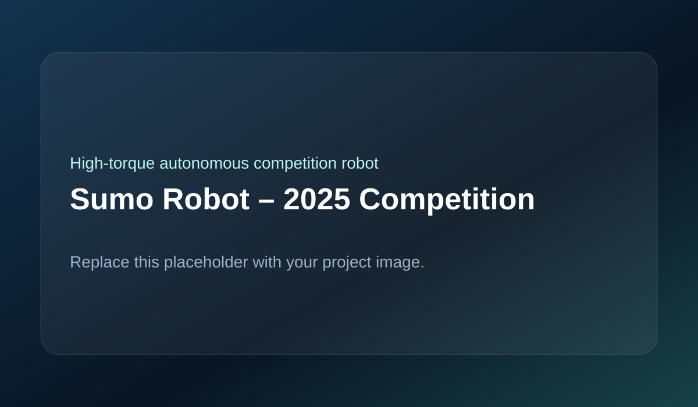

Designed and built an autonomous sumo robot for the 2025 Sumo Robot Competition with edge detection, opponent sensing, and high pushing torque in a compact durable chassis.

The drive system uses four worm gear DC motors to deliver high torque and resist back-driving during pushing. Two 43A BTS motor drivers handle the current demand of aggressive acceleration and stall conditions. Four downward-facing IR sensors detect the ring edge, while two front-facing long-range IR sensors detect an opponent. An ESP32 processes the sensors, executes state-based logic, and controls the drive motors.
Worm gear motors were selected for torque and pushing resistance. High-current motor drivers were chosen to survive aggressive competition loads. The control strategy was kept state-based and reactive to maximize response speed and reliability in the ring. Weight distribution and sensor placement were tuned to improve traction and match behavior.
Key challenges included current spikes under stall, brownout prevention during aggressive pushing, sensor noise causing false edge detection, balancing weight for traction, fast reversal timing at the edge, and maintaining mechanical durability under repeated collisions.
The robot successfully demonstrated autonomous edge avoidance, opponent detection, and aggressive pushing in competition conditions while providing valuable experience in high-torque drivetrain design, power management, reactive control, and physically robust robot construction.